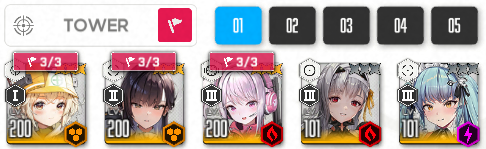
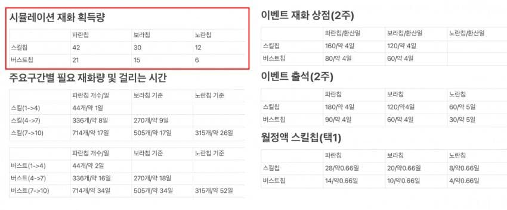
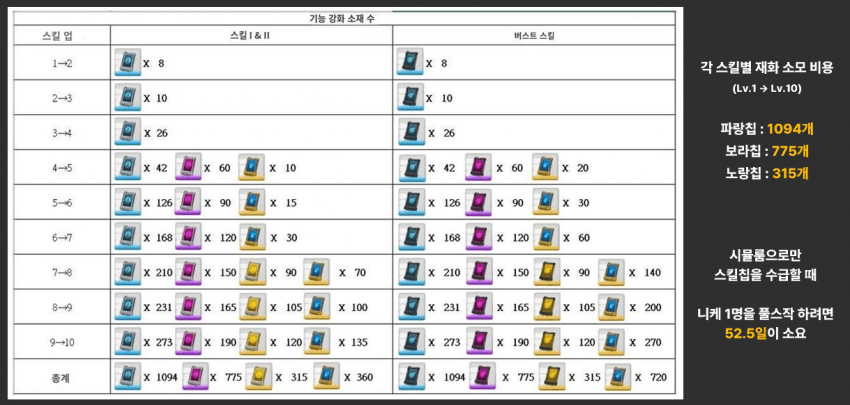

🌑 [뉴비 원터치 가이드] 리세마라 끝났으면 이제 뭐함? - 초벌구이 공략
🌑 [성장] 구간별 코어더스트 계산 툴
🌑 [성장] 콘솔렙의 영향력에 대해 알아보자!
🌑 [뽑기] 리세&위시 추천, 1군&애장품 육성 순서 가이드
🌑 [뽑기] 2026년 02월 시점 위시리스트 추천 (엘리시온, 미실리스, 테트라, 필그림 전 기업 포함)
🌑 [뽑기] 한 장으로 보는 니케 역대 픽업
🌑 [뽑기] 150일뽑 / 단섬 / 파견리롤 비교를 통한 콘솔렙 효율 평가(요약본)
🌑 [재화] 니케 재화 가이드
🌑 [재화] 니응애들 픽업을 위한 뽑기재화 모으기🌑 [재화] (로드 투 빌런) 드황이 주는 재화량 계산해 봄
🌑 [재화] 외부 링크에서 한달동안 얻을 수 있는 재화
▶ 올인원 가이드(강추)
▶ 조합 및 캐릭터 육성

편성창에 빨간 깃발이 뜨는 컨텐츠는 임시합류 니케를 사용할 수 있음.
자세한 내용은 아래 링크 참고
🌑 [임시합류] 임시합류가 무엇인가요?
🌑 [조합] ㄴ이벤트 스토리 전투력 날먹하기(임시합류)
🌑 [조합] 크라운도 이해할 수 있는 스쿼드 구성 공략 (26. 04. 06.)
🌑 [조합] 상황별 스테이지 조합들 (26. 05. 03.)
🌑 [조합] 뉴비를 위한 버스트 사이클 잘 돌아가는 덱 짜기 (5.22 업데이트)
🌑 [조합] ??? : 조합 어떻게 짬? 에 대한 답변(25.04.27)
🌑 [조합] ??? : 그럼 딜러는 뭐 씀? 에 대한 답변(25.04.27)
🌑 [육성] 3주년 유입이 말아주는 1,2군덱 육성 방향 + 1,2군 육성 후 추천 니케 (26.04.01)
🌑 [육성] 3주년 유입이 추천하는 스테이지 구간별 니케 육성 추천순서 (26.04.17)
🌑 [육성] 한눈에 보는 실전압축 필수니케 육성 가이드 (26.04.20)
🌑 [육성] PPT로 보는 3.5주년 뉴비를 위한 육성 기초 (26.04.25)
🌑 [육성] 현시점 뉴비 키워도 손해 안보는 니케들 (26.06.30)
🌑 [육성] 절대 깡오버를 하지 마! (26.08.08)
🌑 [용어] 같은 니케인데 다른 버전의 니케 용어 정리(필그림)
🌑 [캐릭터 티어표]외국 니케 티어표
(티어표는 갤여론과 다른 정보가 많으니 참고용으로만 사용할것)
▶ 스킬작

(출처 : https://gall.dcinside.com/m/gov/1084820)

(※ 기본적으로 스킬 4단계까지는 무리없이 투자할 수 있으므로 잘 모르겠으면 444까지만 키워도 무방)
🌑 [스킬] 스킬 레벨별 수치 보여주는 사이트
🌑 [스킬] 스킬칩 상자가 효율이 다름
🌑 [스킬] 이번 업데이트 이후 월2캐릭 스킬10작 가이드 (25.04.27)
🌑 [스킬] ??? : 스작 어떻게 해야함? 에 대한 답변(25.04.29)
🌑 [스킬] 니케 스킬칩 플래너
▶ 오버로드

(※ 오버로드란?
16지 클리어 이후 개방되는 '특수 개체 요격전'의 9단계 보상인 '커스텀 모듈'을 사용해,
9티어 기업장비를 만렙 찍고 귀속시키면 얻을 수 있는 추가 장비 옵션을 노리는 것으로, 이 게임의 최종 컨텐츠임)
🌑 오버로드 옵션 투력 상승율 정리(유튜브 영상)(6.13 업데이트)
🌑 26년 9월 이후 모듈 패치 적용 시 이득에 대해 알아보자
🌑 오버로드 옵션을 돌렸는데 똑같은 옵이 뜰 확률은 얼마나될까?
🌑 ㄴ 커스텀 모듈 옵션작을 위한 게시글이므로 특요 뚫고 기업장비 먹고 나서 보면 됨.
🌑 ??? : 오버로드작 뭐 어쩌란거임? 에 대한 답변
▶ 소장품/애장품
소장품 강화시 R등급을 15단계 강화시키고 SR로 교체하는것을 추천함(성공 확률이 다르기때문)
R등급 15단계에서 SR등급으로 교체시 SR 5단계부터 업그레이드 가능.
🌑[소장품] 신입 지휘관을 위한 소장품 가이드 (26.02.28)
🌑[소장품] 깡SR 소장품 강화는 일반적으로는 손해
🌑[소장품] R, SR 소장품 강화 기댓값
🌑[소장품] N회 강화 안에 15단계에 도달할 확률
🌑[소장품] ??? : 소장품 누구줘야함? 에 대한 답변(25.04.29)
🌑[소장품]애장품 니케들의 근황에 대해 알아보자!(26.05.15)
▶ 한계돌파 및 코어강화

(※ 돌파 횟수당 +2% 효율이라서 비교적 타 가챠게임들에 비해 증가폭이 낮음
픽업캐릭을 애매하게 돌파하는 것보다 명함 or 풀돌/풀코하고 뽑기 재화를 아끼는걸 추천)
🌑 [성장-돌파] 니케 돌파효율 정리표 (도로시 기준)
🌑 [성장-돌파] 니케 명함~풀코강 호감도/콘솔/장비 딜량 성장률 정리 (09.04)
🌑 [성장-돌파] 명함, 풀돌, 풀코 딜차이 (싱크로 400, 솔레 기준으로 측정)
기재 원하시는 공략 댓글로 제보해주시면 반영하겠습니다.
마지막 업데이트: 26. 09. 11. 12:43